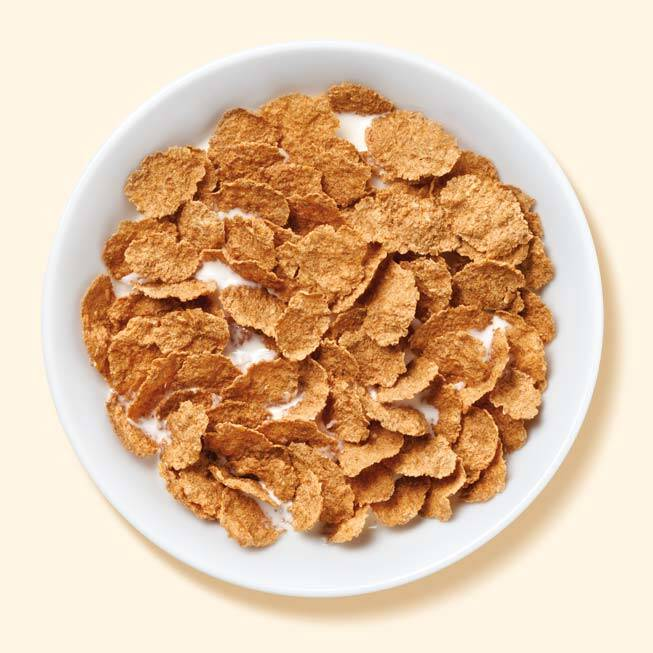

Cereal in a Bowl

-------
Description
Who doesn't love a bowl of cereal? Morning, noon, or night, this one is a quick
and easy one-bowl meal that anyone of any age can master in no time flat.
Ingredients
- Bowl
- Cereal of your choice
- Milk (dairy or plant based, give it your own style!)
- Spoon
Directions
- Assemble all ingredients and implements before starting.
- Pour desired amount of cereal into your bowl.
- Pour milk over the cereal. Stir to combine if desired.
- Consume and repeat until you either explode or run out of cereal.